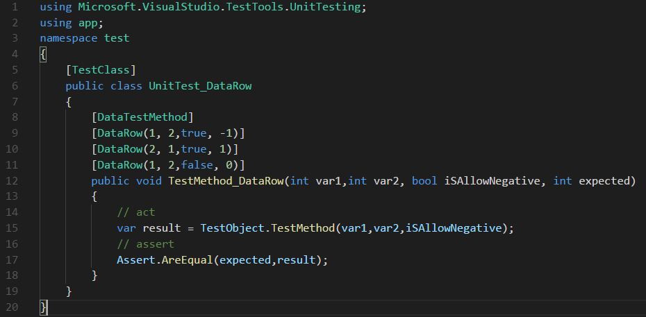
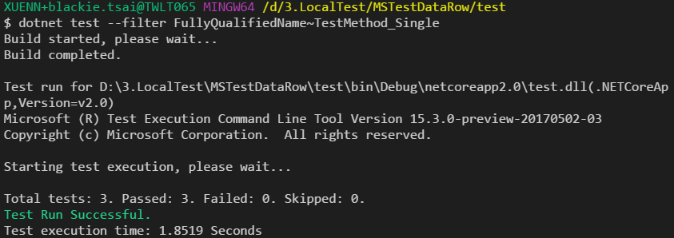
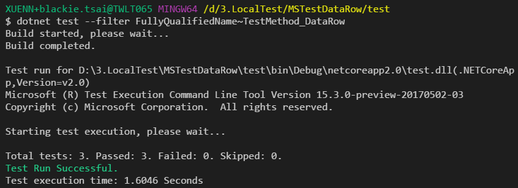
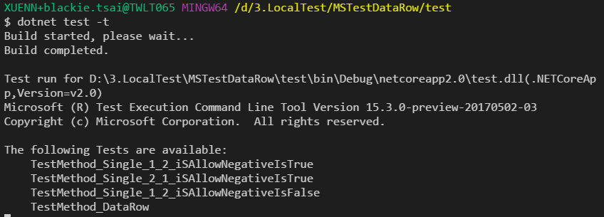

介紹 MSTest V2 的新功能 - DataRow Support

MSTest V2從 2016 開始開放測試後有不少下載量，而.NET Core也是將 MSTest V2 列為預設的支援測試框架之一。
以往 MSTest 與其他測試框架:xUnit, NUnit比較起來，差別最大的就是 DataRow Support。
而在MSTest V2的版本中已經將此功能提供出來，今天就來稍微介紹一下該功能與如何透過他更有效率的撰寫我們的測試程式。
Write a Test
如何建立MSTest的方式我們以.NET Core的開發為環境，可以參考ASP.NET Core play with MSTest
而今天我們假設寫了一個很簡單的程式如下:
TestObject.cs
1 | using System; |
根據上面的程式我們寫了以下的測試案例:
- 驗證數值相減(1-2)，且允許負數的情況下結果為 -1
- 驗證數值相減(2-1)，且允許負數的情況下結果為 1
- 驗證數值相減(1-2)，且不允許負數的情況下結果為 0
Write Test Without DataRow
在我們不用DataRow的方式撰寫實際的測試案例程式碼為下:
UnitTest.cs
1 | using Microsoft.VisualStudio.TestTools.UnitTesting; |
此時我們可以透過下方指令執行該測試:
dotnet test --filter FullyQualifiedName~TestMethod_Single

這邊可以發現我們的程式碼其實重複了三個區塊，只有數值跟期望結果是不一樣的。
Write Test With DataRow
而當我們改用DataRow後則為下面的程式碼:
UnitTest_DataRow.cs
1 | using Microsoft.VisualStudio.TestTools.UnitTesting; |
此時我們可以透過下方指令執行該測試:
dotnet test --filter FullyQualifiedName~TestMethod_DataRow

從上面我們即可看到DataRow帶來的程式碼的簡化與好處!
而如果要看所有當前的測試案例，我們可以透過 -t 參數
dotnet test -t
